BaiDu搜索引擎全攻略
互联网的出现改变了人们的生活，而搜索引擎的出现改变了互联网。二十世纪九十年代以前，世界上没有搜索引擎。
但伴随着互联网的迅猛发展，面对着成几何级数般增长的信息，网络用户想找到自己所需要的资料如同大海捞针，于是为满足用户信息查询需求的专业搜索引擎便应运而生。百度支持搜索1.3亿中文网页，并且百度每天都在增加几十万新网页，对重要的中文网页每天进行更新，用户通过百度搜索引擎可以搜到世界上最新、最全的中文信息，也是当今互联网上最大、最流行的中文搜索引擎。
第一：搜索引擎界面
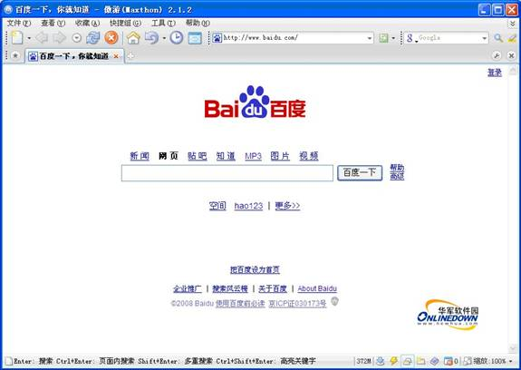
Baidu搜索引擎界面非常简洁，易于操作。主体部分包括一个长长的搜索框，外加一个搜索按钮、LOGO及搜索分类标签。
第二：基本搜索功能
百度是中国互联网用户最常用的搜索引擎之一，每天完成上亿次搜索；也是全球最大的中文搜索引擎，可查询数十亿中文网页。
1：网页搜索
使用百度搜索，您只需要在搜索框内输入需要查询的内容，敲回车键；或者用鼠标点击搜索框右侧的“百度搜索”按钮，就可以得到最符合查询需求的网页内容。
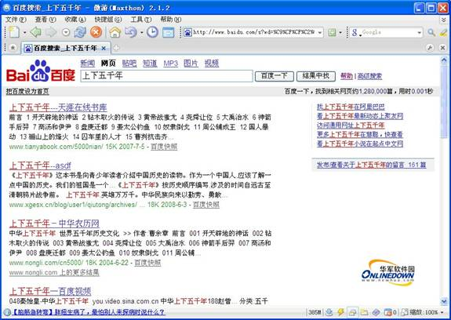
网页搜索结果显示
2：新闻搜索
百度新闻是一种24小时的自动新闻服务，与其它新闻服务不同，不含任何人工编辑成分，没有新闻偏见。它从上千个新闻源中收集并筛选新闻报道，将最新最及时的新闻提供给用户，突出新闻的客观性和完整性，真实地反映每时每刻的新闻热点。
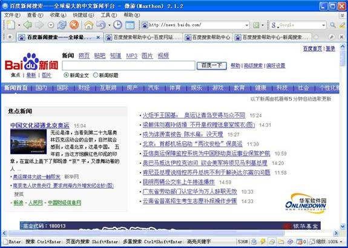
新闻搜索：点击首页正上方“新闻”标签，再输入要查询的关键词即可查看你想要的新闻；
3：图片搜索
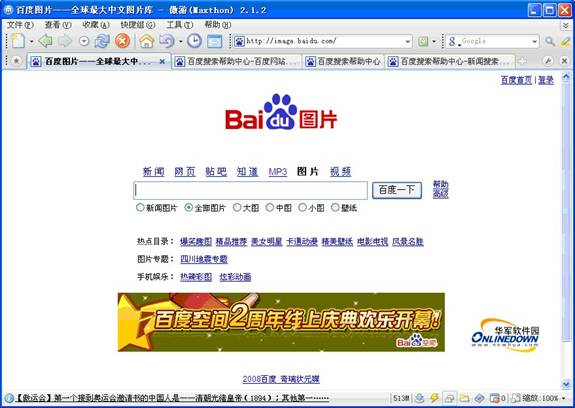
图片搜索：点击首页正上方“图片”标签，再输入要查询的关键词即可进行图片内容的搜索，并且百度还提供了多种图片分类供用户来准确搜索；
4：音频搜索
音频文件的搜索可以说是百度最有特色的搜索服务，也是它借以成名的法宝，甚至可以毫不夸张的说没有音频文件搜索的成功，就没有百度的辉煌。
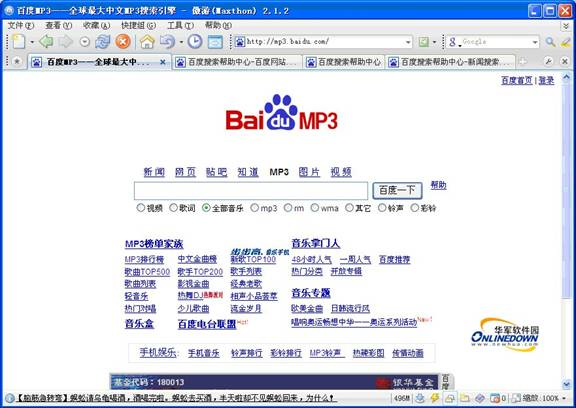
音频搜索：点击首页正上方“音频”标签，再输入要查询的关键字即可进行音频信息的搜索，并且百度还提供了多种音频分类供用户选择搜索；
5：视频搜索
视频搜索：点击首页正上方“视频”标签，再输入要查询的关键字即可进行视频信息的搜索，并且还提供了多种视频分类供用户来选择搜索；
第三：特色搜索功能
对于baidu而言，还开发了很多极具特色的搜索功能，可以说是“只有想不到，没有搜不到”。
1：地区搜索
通过百度地区搜索，您可以限定只搜索某个或某几个地区的网页；
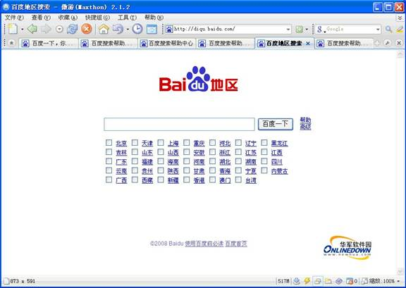
地区搜索：点击首页正下方“更多”标签，再点击“地区搜索”，选择某个区域、输入要查询的关键字即可进行获得限制区域内的查询信息；
2：地图搜索
百度地图搜索是百度联合国内知名的电子地图服务提供商“MAPBAR.COM”推出的本地化地图搜索服务。通过百度地图搜索，您可以找到指定的城市、城区、街道、建筑物等所在的地理位置，也可以找到离您最近的所有餐馆、学校、银行、公园等等。百度地图搜索还为您提供了路线查询功能，如果您要去某个地点，百度地图搜索会提示您如何换乘公交车，如果您想自己驾车去，百度地图搜索同样会为您推荐最佳路线。
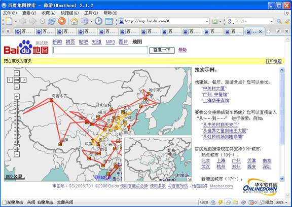
地图搜索：点击首页正下方“更多”标签，再点击“地图”，输入要查询的信息就可查询地址、捜索地区周边及规划路线等。
3：博客搜索
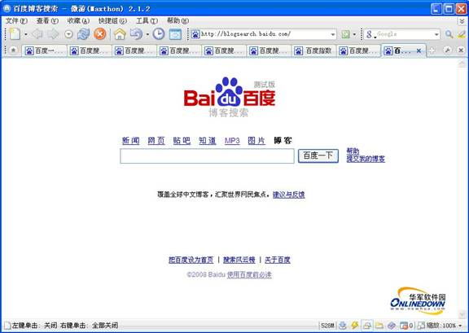
博客搜索：点击首页正下方“更多”标签，再点击“博客搜索”，输入要查询的信息，就可从最新的博客文章中查找您感兴趣的主题；
4：教育网站搜索
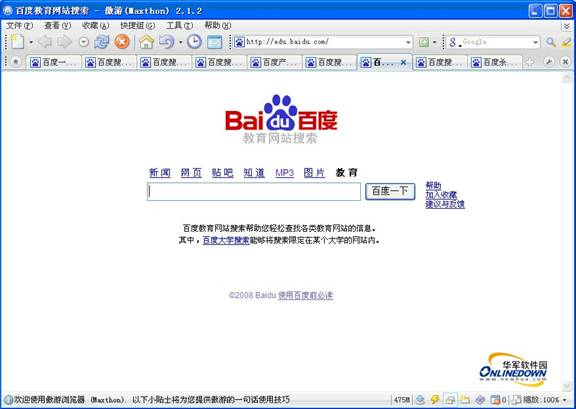
教育网站搜索：点击首页正下方“更多”标签，再点击“教育网站搜索”，输入要查询的关键字即可搜索与教育相关的网页信息；
5：政府网站搜索
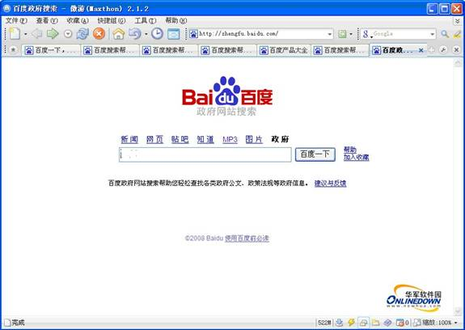
政府网站搜索：点击首页正下方“更多”标签，再点击“政府网站搜索”，输入要查询的关键字即可搜索各类政府公文、政策法规等政府信息；
6：图书搜索
图书搜索：选择首页左上方“更多”标签，再点击“图书搜索”，输入要查询的关键词即搜索图书信息；
7：专利搜索
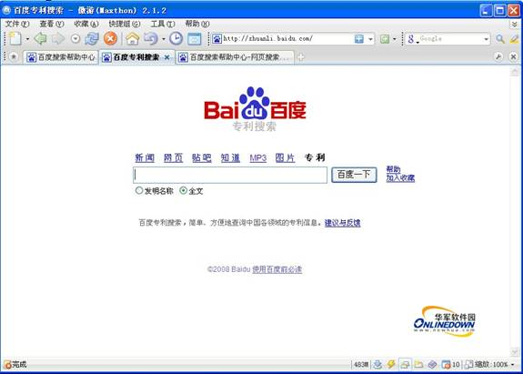
专利搜索：选择首页左上方“更多”标签，再点击“专利搜索”，输入要查询的关键词即可搜索你所需要的中国各领域的专利信息；
8：百度风云榜
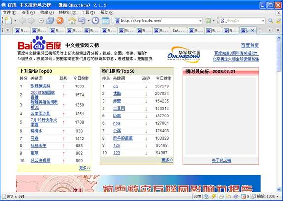
风云榜：点击首页正下方“更多”标签，再点击“风云榜”，即可查看众多热门榜单，掌握最新流行；
9：黄页搜索
百度黄页搜索是由中国电信黄页提供企事业数据，可搜索全国主要城市的几百万家企事业信息，查询更快速、获取更便捷。
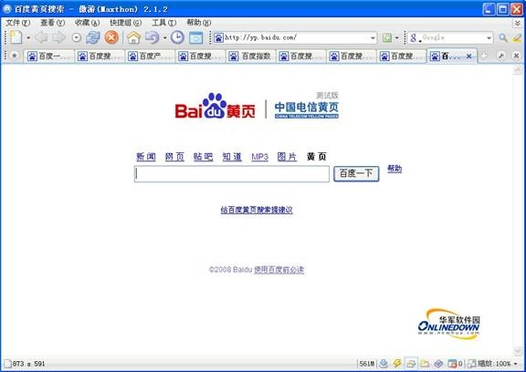
黄页搜索：点击首页正下方“更多”标签，再点击“黄页”，即可查询全国主要城市的几百万家企事业信息；
10：少儿搜索
百度少儿搜索是从百度数十亿中文网页中排除了少儿不宜内容的庞大信息网页库。
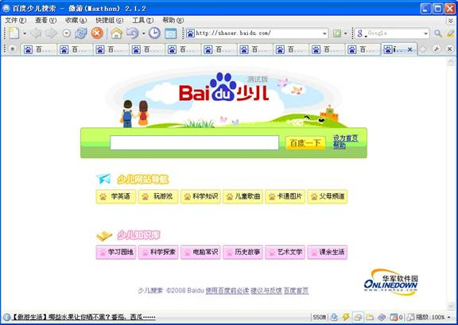
少儿搜索：点击首页正下方“更多”标签，再点击“少儿搜索”，即可剔除不良信息内容的查询；（这个可以说是百度极具特色并且发展潜力巨大的分类搜索功能）
11：法律搜索
百度法律搜索是百度与“北大英华公司”合作推出的针对法律方面的专业搜索，提供了自建国以来中央和地方的各项法律法规条文、法律词语解释等信息，为您查找相关法律资料
提供方便。
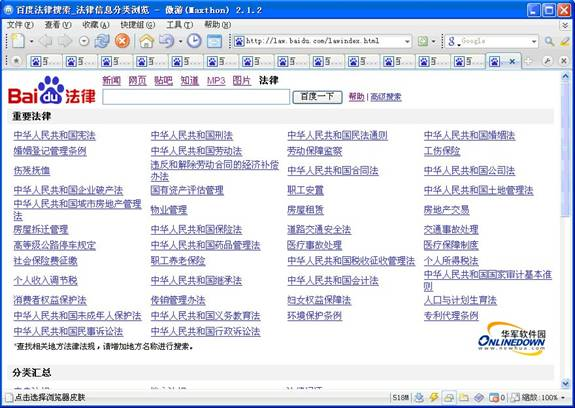
法律搜索：点击首页正下方“更多”标签，再点击“法律搜索”，输入要查询的关键词，即可为您查找相关法律资料；
第四：高级搜索功能
Baidu还开发了一些高级搜索功能，供有特殊需要的用户进行使用；
1：高级搜索
高级搜索相当于一个多条件的组合搜索，它可以根据用户的需要更加灵活的根据用户输入的不同条件组合来进行搜索；
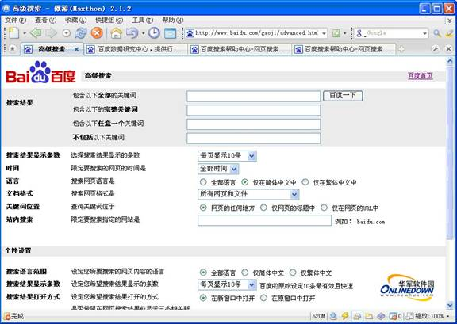
高级搜索：点击首页右侧“高级搜索”标签，再根据需要输入多个要查询的信息即可准确的搜索想要的结果；
2：保留字搜索
Baidu提供了一种特别的功能，通过baidu专门定义的一些保留字来执行一些特殊的搜索或功能；
A：通过保留字“filetype”查找非HTML格式的文件
百度支持DOC、XLS、PPT、PDF、RTF、ALL等多种类型的文档搜索。只要与用户的搜索相关，就会自动显示在搜索结果中。例如：如果您只想查找PDF格式的文件，而不要一般网页，只需搜索 关键词 filetype:pdf 就可以了。
B：通过保留字“site”把搜索范围限定在特定站点中
我们可以将查找的范围限制在某个网站上。例如，搜索 关键词site:www.newhua.com 就会返回华军软件园站点中你所查找的所有相关结果；
C：通过保留字“intitle”把搜索范围限定在网页标题中
我们可以将查找的范围限制在网页标题中。例如，搜索关键词intitle:股票 就会返回含有关键词标题的所有网页；
D：通过保留字“inurl”把搜索范围限定在链接中
网页url中的某些信息，常常有某种有价值的含义。我们可以将查找的范围限制在链接中。例如，搜索 关键词inurl:技巧 就会返回含有关键词链接的所有相关网页；
E：通过“双引号和书名号”符号实现搜索精确匹配
如果输入的查询词很长，百度会将查询词进行拆分，从而影响到查询效果。但给查询词加上双引号或书名号，查询词就不会被百度拆分。例如，搜索电影《手机》，如果不加书名号，那么很多情况下出来的是通讯工具；
F：希望搜索结果中不含特定查询词
如果您发现搜索结果中，有某一类网页是您不希望看见的，而且，这些
网页都包含特定的关键词，那么用减号语法，就可以去除所有这些含有特定关键词的网页。例如，搜索神雕侠侣，希望是关于武侠小说方面的内容，却发现很多关于电视剧方面的网页。那么就可以这样查询：神雕侠侣 -电视剧，但要注意前一个关键词，和减号之间必须有空格，否则，减号会被当成连字符处理，而失去减号语法功能；减号和后一个关键词之间，有无空格均可。
第五：另类功能
Baidu还提供了很多另类功能作为搜索引擎的辅助和加强。
1：网站导航
百度网站是一个类似于图书馆分类方式的主题目录，百度网站导航也采用主题分类的方法，人工维护、更新，及时为您推荐最优秀的网络资源，是您在互联网上查找信息的快速指南。目前百度网站导航总共分为 5 个大类， 70 多个子类目。
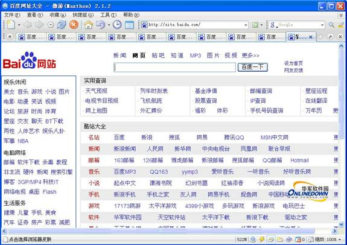
网站导航：点击首页正下方“更多”标签，再点击“网站”，即可进入百度网站导航页面；
2：百度指数
百度指数是以百度网页搜索和百度新闻搜索为基础的免费海量数据分析服务，用以反映不同关键词在过去一段时间里的“用户关注度”和“媒体关注度”，直接、客观地反映社会热点、网民的兴趣和需求。让您可以发现、共享和挖掘互联网上最有价值的信息和资讯。
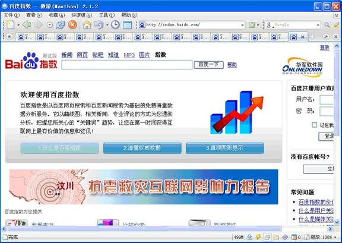
百度指数：点击首页正下方“更多”标签，再点击“指数”，通过它发现、共享和挖掘互联网上最有价值的信息和资讯；
3：百度词典
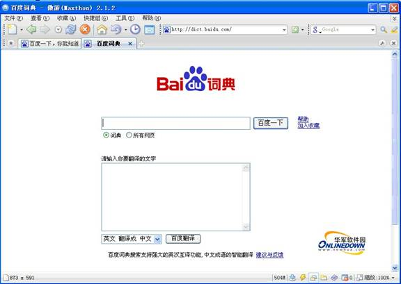
百度词典：点击首页正下方“更多”标签，再点击“词典”，即可在线翻译普通的英语单词、词组、汉字词语、及外文段落等；
4：安全中心
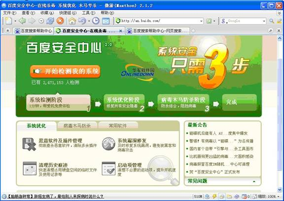
安全中心：点击首页正下方“更多”标签，再点击“安全中心”，即可在线进行系统检测优化及木马查杀；
5：游戏娱乐平台
游戏娱乐平台：点击首页正下方“更多”标签，再点击“游戏娱乐平台”，即可在线游戏；
6：行业报告
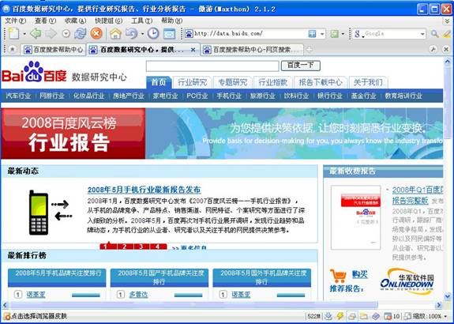
行业报告：点击首页正下方“更多”标签，再点击“行业报告”，即可查看众多行业的最新研究报告；
7：搜索窍门
Google还提供了一些搜索小窍门来更好的方便用户的使用。主要包括邮政编号、计算器、度量衡转换、股票查询、列车时刻表、飞机航班查询、天气查询、货币转换等；
总结：
总的来说，Baidu搜索引擎其简洁的界面、简单的操作、快速的查询速度、准确的搜索结果，强大的细分搜索功能让你不得不叹服，特别是对音频、视频文件及中文搜索的支持可以说是非常强大的，即使是搜索引擎业的老大google在此细分搜索方面也非其对手。